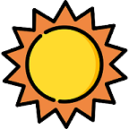
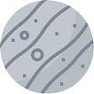
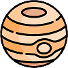
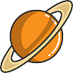

The sun lies at the heart of the solar system, where it is by far the largest object.
It holds 99.8 percent of the solar system's mass and is roughly 109 times
the diameter of the Earth — about one million Earths could fit inside the sun.
The Sun will continue to burn for about 130 million years after it burns through all of its hydrogen,
instead burning helium. During this time it will expand to such a size that it will
engulf Mercury, Venus, and Earth. When it reaches this point,
it will have become a red giant star.

Mercury
Mercury is the smallest planet in our solar system.
It’s just a little bigger than Earth’s moon.
It is the closest planet to the sun, but it’s actually not the hottest..
Venus is hotter! Along with Venus, Earth, and Mars, Mercury is one of the rocky planets. It has a solid surface that is covered with craters. It has no atmosphere, and it doesn’t have any moons. Mercury likes to keep things simple.
This small planet spins around slowly compared to Earth,
so one day lasts a long time. Mercury takes 59 Earth days to make one
full rotation. A year on Mercury goes by fast.
Because it’s the closest planet to the sun,
it doesn’t take very long to go all the way around.
It completes one revolution around the sun in just 88 Earth days.
If you lived on Mercury, you’d have a birthday every three months!

Venus
Even though Venus isn't the closest planet to the sun,
it is still the hottest. It has a thick atmosphere full of the
greenhouse gas carbon dioxide and clouds made of sulfuric acid.
The gas traps heat and keeps Venus toasty warm.
In fact, it's so hot on Venus, metals like lead would be puddles of
melted liquid.
Venus looks like a very active planet. It has mountains and volcanoes.
Venus is similar in size to Earth. Earth is just a little bit bigger.
Venus is unusual because it spins the opposite direction of Earth
and most other planets. And its rotation is very slow.
It takes about 243 Earth days to spin around just once.
Because it's so close to the sun, a year goes by fast.
It takes 225 Earth days for Venus to go all the way around the sun.
That means that a day on Venus is a little longer than a year on Venus.
Earth
Our home planet Earth is a rocky, terrestrial planet.
It has a solid and active surface with mountains, valleys, canyons,
plains and so much more. Earth is special because it is an
ocean planet. Water covers 70% of Earth's surface.
Our atmosphere is made mostly of nitrogen and has plenty of oxygen
for us to breathe. The atmosphere also protects us from
incoming meteoroids, most of which break up in our atmosphere
before they can strike the surface as meteorites.
Earth's atmosphere is the right thickness to keep the planet warm
so living things like us can be there. It’s the only planet in
our solar system we know of that supports life.
Mars
Mars is a cold desert world. It is half the size of Earth.
Mars is sometimes called the Red Planet.
It's red because of rusty iron in the ground.
Like Earth, Mars has seasons, polar ice caps, volcanoes, canyons,
and weather. It has a very thin atmosphere made of carbon dioxide,
nitrogen, and argon. There are signs of ancient floods on Mars,
but now water mostly exists in icy dirt and thin clouds.
On some Martian hillsides, there is evidence of liquid salty water
in the ground. Scientists want to know if Mars may have had
living things in the past. They also want to know if Mars could
support life now or in the future.
Jupiter
Jupiter is the biggest planet in our solar system.
It's similar to a star, but it never got big enough to start
burning. It is covered in swirling cloud stripes.
It has big storms like the Great Red Spot, which has been
going for hundreds of years. Jupiter is a gas giant and doesn't
have a solid surface, but it may have a solid inner core about
the size of Earth. Jupiter also has rings, but they're too faint
to see very well.

Saturn
Saturn isn’t the only planet to have rings,
but it definitely has the most beautiful ones.
The rings we see are made of groups of tiny ringlets that
surround Saturn. They’re made of chunks of ice and rock.
Like Jupiter, Saturn is mostly a ball of hydrogen and helium.
When Galileo Galilei saw Saturn through a telescope in the 1600s,
he wasn't sure what he was seeing.
At first he thought he was looking at three planets,
or a planet with handles. Now we know those "handles" turned out
to be the rings of Saturn.

Uranus
Uranus is made of water, methane, and ammonia fluids above a
small rocky center. Its atmosphere is made of hydrogen and helium
like Jupiter and Saturn, but it also has methane.
The methane makes Uranus blue. Uranus also has faint rings.
The inner rings are narrow and dark. The outer rings are brightly
colored and easier to see. Like Venus, Uranus rotates in the
opposite direction as most other planets.
And unlike any other planet, Uranus rotates on its side.
Neptune
Neptune is dark, cold, and very windy. It's the last of the planets
in our solar system. It's more than 30 times as far from the sun
as Earth is. Neptune is very similar to Uranus. It's made of a thick fog
of water, ammonia, and methane over an Earth-sized solid center.
Its atmosphere is made of hydrogen, helium, and methane.
The methane gives Neptune the same blue color as Uranus.
Neptune has six rings, but they're very hard to see.